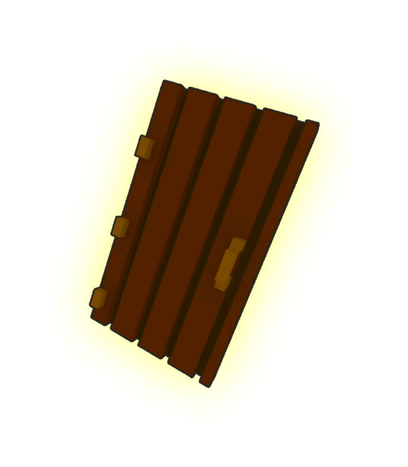

Friend
I "FRIEND” sono i mostri del gioco: ognuno è davvero unico, sia nell’aspetto che nel modo in cui va affrontato. Qui non si combatte: i mostri vanno schivati. Ognuno presenta sfide diverse
I "FRIEND” sono i mostri del gioco: ognuno è davvero unico, sia nell’aspetto che nel modo in cui va affrontato. Qui non si combatte: i mostri vanno schivati. Ognuno presenta sfide diverse
Il gioco si svolge all’interno della magione più grande mai costruita, un luogo immenso e misterioso progettato per ospitare i FRIEND. Ogni ala della magione è un mondo a sé: puoi ritrovarti a passare da una semplice cucina a un’intera città incastonata tra le mura, da un parco divertimenti a un ospedale abbandonato…
Il gioco è pensato per essere altamente ripetibile e rigiocabile. Oltre a una vasta gamma di achievement (vere e proprie sfide da completare), anche la generazione del mondo cambia a ogni partita, offrendo situazioni, percorsi e incontri sempre diversi.
Questo titolo rappresenta uno dei primissimi esempi realmente giocabili di un genere ancora quasi inesplorato: un nuovo modo di vivere tensione, scoperta e imprevedibilità. Un genere nato da poche sperimentazioni, ma qui portato a un livello completamente nuovo, con una visione chiara e un gameplay costruito per sorprendere.
In questo nuovo genere non si tratta di combattere, ma di sopravvivere all’ignoto: ambienti che si trasformano davanti ai tuoi occhi, entità uniche che seguono regole proprie e situazioni sempre diverse che ti spingono ad andare oltre la prossima porta. Ogni incontro è una storia. Ogni stanza è un rischio. Ogni passo è una sorpresa.
Il risultato è un gioco che punta a definire gli standard di questo nuovo filone: dinamico, rigiocabile, imprevedibile e perfetto per chi cerca emozioni fresche, lontane dai generi tradizionali ormai saturi.
Non è solo un gioco: è l’inizio di qualcosa di nuovo.
E tu puoi essere tra i primi a viverlo.
